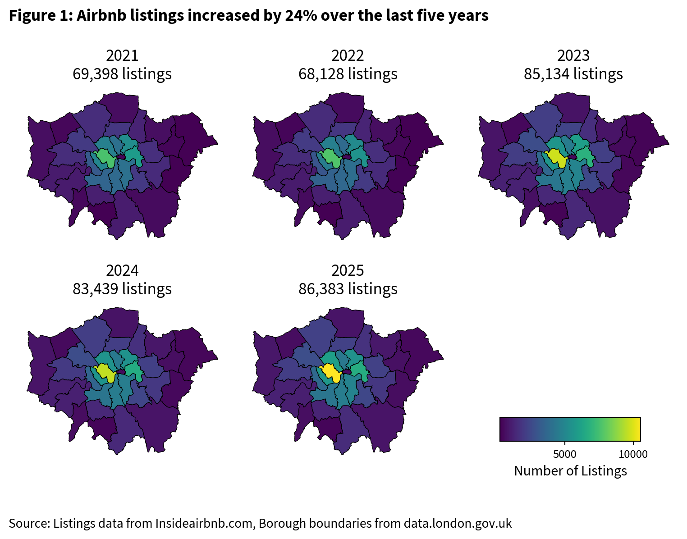
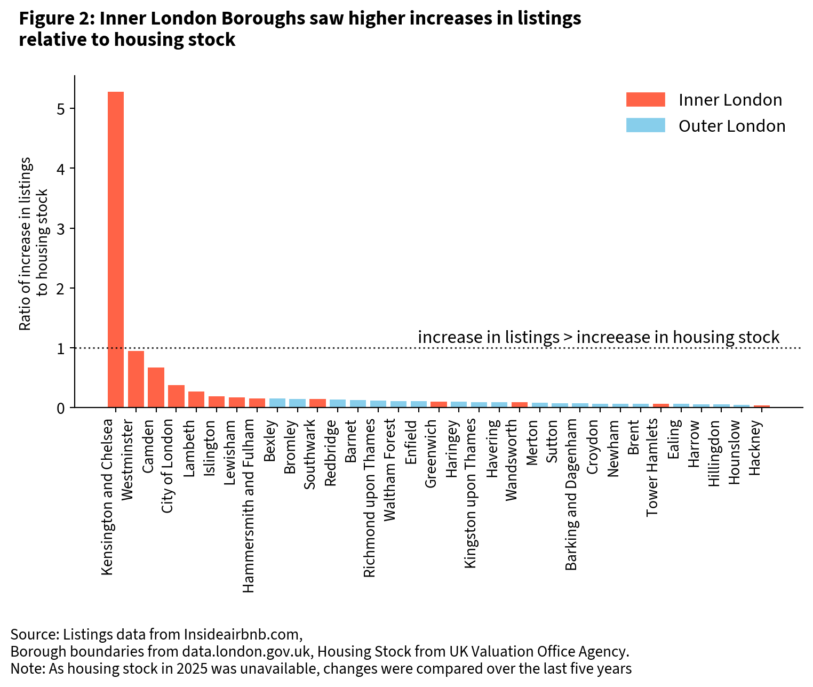
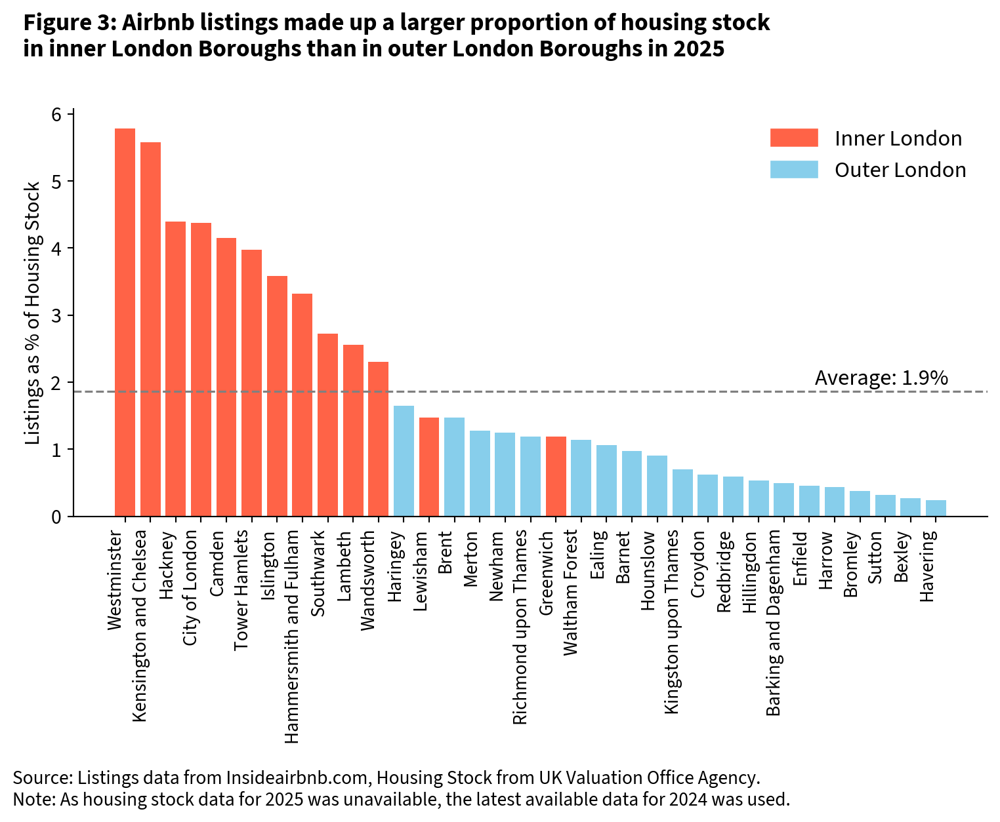
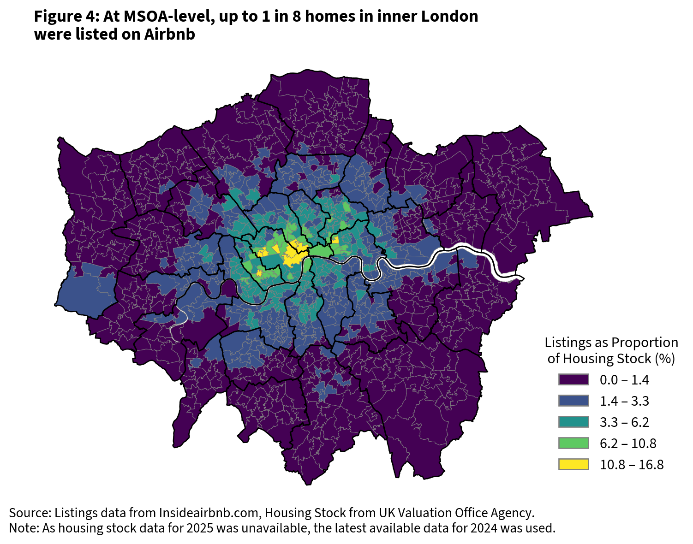
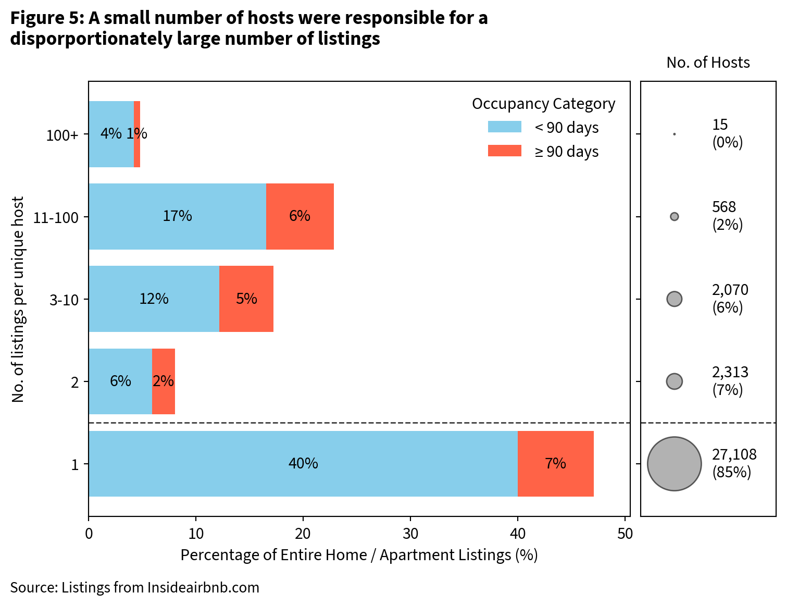
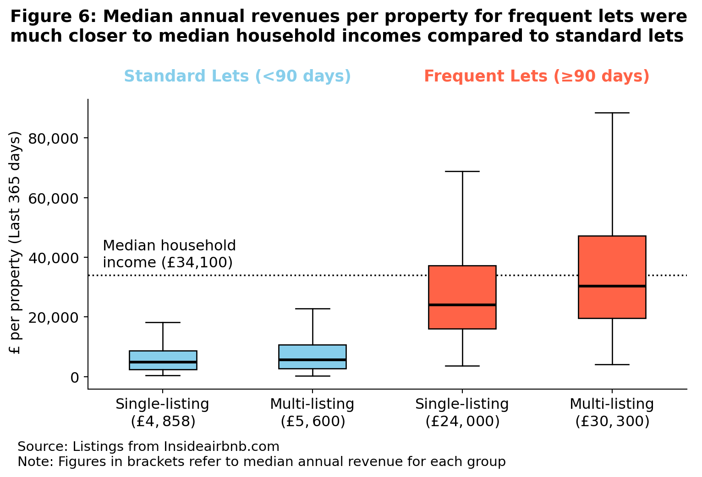
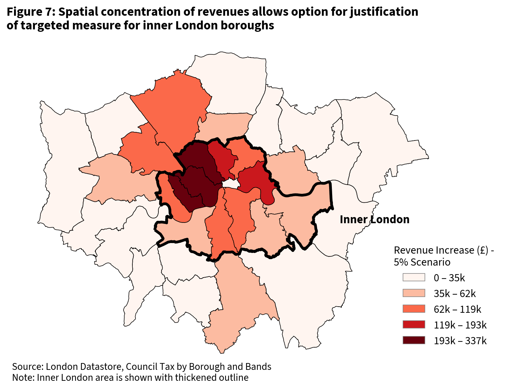

The Pythoneers’ Group Project
Priorities for Feedback
We would appreciate comments on (1) the reproducibility of our code and whether this could be improved, and recommended coding conventions that would be helpful to produce a professional product in future, (2) any improvements that could be made to the way we have tangled code and prose; the large code chunks in particular, while they seem necessary, do make it difficult to focus on the flow of the narrative when putting the report together, and (3) any quick ways to check wordcount, as the difficulty of confirming the wordcount of the overall document has made the drafting process slightly more complicated.
Finding a balance: Airbnb’s growth, impact and benefits for London
Executive Summary
The opposition’s proposal will likely gain some traction due to public awareness of measures taken against Airbnb in other holiday destinations (Hedgecoe, 2025), and of shortage of housing in the UK (MHCLG and Rayner, 2024). The Mayor’s aide’s circumstances have stirred media interest, feeding into the debate about the housing market and suspicions of political hypocrisy (McKiernan and Eardley, 2025).
While studies have investigated the undesirable consequences for areas that host large proportions of Airbnb properties, such as increased crime rates (Lanfear and Kirk, 2024), the opposition’s proposal focuses on Airbnb’s impact on housing stock. This report does likewise by using data from Inside Airbnb,1 to evaluate Airbnb’s penetration into the London property market, and make recommendations on how to manage Airbnb’s impact, and the allegations against the aide.
In summary:
- London’s Airbnb listings have expanded faster than housing supply, particularly in inner boroughs,2 likely heightening market pressures and public concern.
- Many entire-home listings exceed the 90-day limit, with potential regulatory breaches concentrated among multi-listing “professional” landlords.
- A council tax surcharge is a blunt and politically difficult tool. There are effective alternatives that would target problematic hosts without disadvantaging ordinary residents who rely on modest hosting income.
- The aide’s conduct may be subject to criminal sanction and could undermine the Mayor’s record. It should be investigated fully but not allowed to dominate the conversation around the opposition’s proposal and its deficiencies, or the alternative courses of action.
1. Is Airbnb ‘out of control’ in London?
The opposition are behind the times: the increase in short-term lets and its potential to damage the housing supply is a concern that the Mayor’s office has already raised and taken concrete steps to tackle.
Since 2015, London landlords letting their property for more than 90 days per year must obtain planning permission for a change of use (Mayor of London, 2023a). The Mayor has also proposed a landlord registration system (Mayor of London, 2019) and a licensing system (Mayor of London, 2023b). Airbnb and its competitors are therefore under far more “control” in London than in many other cities (Bei and Celata, 2023).
Having said that:
The growth of Airbnbs has recently far outpaced that of housing stock in London.
A large proportion of hosts may be flouting the planning permission requirement, although exact numbers are difficult to establish (see Limitations section). Once established, appropriate action could be taken against landlords in breach. However, this process is not costless.
Changes in Airbnb listings and housing stock 2021-2025
Since 2021, London has seen a 24% increase in Airbnb listings, rising from 69,400 to 86,400 listings (Figure 1).
Most of this occurred between 2022-2023, with new listings concentrated in inner London:
Westminster, Camden, Southwark, Lambeth and Kensington and Chelsea saw the highest increase.
Westminster alone added 2,900 listings, a 39% increase.
In contrast, between 2020 and 2024, London’s housing stock grew from 3.68 million to 3.81 million properties: a much smaller increase of 3.7%. Kensington and Chelsea saw 5 times more new Airbnb listings than new housing stock.

What is the situation in 2025?
Across London boroughs, the average number of listings as a percentage of housing stock was 1.9%, though 11 inner London boroughs exceeded this average. Almost 6% of total housing stock in Westminster, and Kensington and Chelsea were listed on Airbnb (Figure 3). Up to 1 in 8 homes in some MSOAs in inner London were listed on Airbnb (Figure 4).
The growth of Airbnb properties therefore far outstrips the rate of growth of new housing available, particularly in inner London boroughs.
In a tight housing market, this exacerbates pressure on housing prices and rents (Todd, Musah and Cheshire, 2021), driving a perception that Airbnb could be “out of control” in parts of London.


Are hosts flouting the regulations?
Based on occupancy estimates,3 12,100 entire homes were used for 90 or more nights per year (“frequent lets”). This represented more than 1 in 5 of all entire homes listings, and 1 in 8 of all listings in London.4
Again, inner London boroughs showed the highest rates of intense use. Westminster, Camden and Islington had 27%, 25% and 23% of entire home listings as frequent lets respectively.
Notwithstanding the sensitivity of assumptions,5 we expect this to be a conservative estimate, given reports of multiple listings of the same property (Benjamin and Lynn, 2025).
2. Taking back “control”?
The opposition proposes that “professional” landlords’ properties should be subject to registration and increased council tax. The Mayor’s office should make clear that it has already proposed a registration system for landlords, and welcome the opposition’s belated support.
The opposition has not defined “professional” landlord, nor provided a plan for implementation.
Our analysis provides a reasoned basis for classing any host letting out two or more entire homes on a “frequent let” basis as a professional landlord (note that this would include the aide at the centre of the current controversy).
On this basis, the opposition’s proposal would mean that over half of London’s entire homes lettings would be subject to increased council tax.
What is a professional landlord?
Studies suggest that a company or individual that operates two or more entire homes can be classed as a professional landlord. Such “multi-listing hosts” could be drivers of increases in rent and of Airbnb’s profit in London (Cox and Slee, 2016; Todd, Musah and Cheshire, 2021).
The data show that a small number of hosts are responsible for a disproportionately large number of listings (Figure 5).
27,108 (85%) hosts own only 1 entire property (“single-listing hosts”), and make up 47% of listings.
4,966 (15%) hosts own two or more entire properties (“multi-listing hosts”), and make up 53% of listings.
15 (0.05%) hosts, own over 100 entire properties, and, between them, 5% of listings.
Notably, a larger proportion of properties belonging to multi-listings hosts were let out for 90 or more days (“frequent lets”) (14%), than properties belonging to single-listing hosts (7%).

Therefore, using the two-property threshold, 15% of Airbnb hosts letting entire homes in London would be treated as “professional” landlords.
We test the robustness of this analysis in a London context by:
Establishing the income earned from renting out entire homes on Airbnb.
Comparing this with the annual median income in London,6 £34,100, on the basis that a host earning this much could, in theory, treat Airbnb rentals as their sole employment.
Based on estimated revenues,7 the median annual earnings per property were:
£4,858 for single-listing hosts and £5,600 for multi-listing hosts on “standard lets”.
£24,000 for single-listing hosts and £30,300 for multi-listing hosts on “frequent lets”.

Using the more conservative income from single-listing hosts on standard lets, £4,858, owning 7 properties is the threshold to make more than the London median income.
However, with frequent lets, owning 2 properties is sufficient to make near double the median income of London. Therefore, categorising any host owning two or more entire properties as a “professional” landlord is defensible.
If the opposition’s proposal were implemented using this definition, 30,446 properties would be subject to increased council tax, or 53% of all entire homes listings.
These figures do not account for a landlord’s operating costs, which reduces bottom lines, especially when they own fewer properties and cannot benefit from economies of scale.
Who are London’s “professional” landlords?
Most of both single (76%) and multi-listing (68%) hosts are UK-based. However, at least one of the hosts that owns over 100 properties is a company based abroad (Dubai). Three others have names suggesting that they are companies. However, these numbers are incomplete because 21% of hosts do not provide a host location. Hence, a dialogue with Airbnb around their registration process may be beneficial.
3. Evaluating the opposition’s proposal
Is council tax an appropriate additional control?
It is not clear that revenues from increasing council tax would outweigh the negative impact of the high proportion of Airbnbs in London.
All properties in the same band, based on valuation in 1991, pay the same rate of council tax, unless an exemption applies. Council tax is not a mechanism designed to assess current commercial use or income, making it a blunt instrument for targeted market intervention.
The opposition do not explain how the council tax system might be adjusted. However, the recent 2025 Budget outlines plans to modify the council tax system from 2028 to apply a surcharge on luxury properties, using 2026 valuations (McNamee, 2025). This suggests greater flexibility in the system than has historically been possible, and further work to “piggyback” on these changes could be explored.
To illustrate potential revenues from council tax adjustments, a 2%, 5% and 10% premium was applied to the current council tax Band D rate8 for all properties operated by “professional” landlords.
| Premium | Increase (London-wide) | Increase (Inner London only) | |
|---|---|---|---|
| 0 | 2% | £1.0m | £0.7m |
| 1 | 5% | £2.5m | £1.8m |
| 2 | 10% | £5.1m | £3.7m |

This indicates a potential yield of between £1.0m and £5.1m. Inner London boroughs account for £0.7m to £3.7m of this total.
The Mayor could therefore justify the policy as one specifically taxing central areas, where commercial exploitation of housing stock is most acute, rather than a blanket tax rise across London (Figure 7). A targeted surcharge affecting “professional” Airbnb hosts (in the manner of the Budget’s “Mansion Tax” surcharge) is likely to see far less pushback than a general increase in council tax for all properties.
However, determining which bands should be affected is not straightforward, as properties of all types and values are available for short-term let on Airbnb and other platforms.

Can we do better?
Given that some Airbnb hosts already operate as companies, and that many more would be required to register as “professional” landlords under these proposals, business rates represent a viable targeted alternative that builds on existing regulatory infrastructure rather than creating a parallel scheme. Business rates apply where a property is used for commercial purposes beyond a prescribed threshold (Gov.uk, 2023). This approach offers greater clarity, as “professional” hosts would be classified as businesses removing the need for a separate administrative system. However, business rates are triggered by different thresholds, and additional work would be required to align these with planning permission requirements.
Alternatively, a “tourist tax”, could be considered. This could raise £240 million a year and would not necessarily reduce visitor numbers (Jaffer, 2025). This would be more targeted and easily administered, without relying on property valuations or enforcement against non-compliant landlords, since it is typically paid by the tourist.
5. The aide: deflecting a distraction
While the issue of Airbnb’s coming to the fore has upsides, the aide’s conduct is, at the least, a source of embarrassment for the Mayor’s office and, at worst, a criminal offence (under the Prevention of Social Housing Fraud Act 2013). Appropriate steps must be taken to uphold public trust in the Mayor’s office.
However:
The aide’s full circumstances unknown and any criminal prosecution is a matter for the CPS; in some circumstances it is permitted to let social housing (Shelter, 2025).
Even for multi-property owners, our analysis shows that some hosts may require up to seven properties to reach the London median income. Letting two properties, the aide’s income may not meet that threshold.
The opposition is clearly using the aide’s circumstances to score political points, but in doing so have put themselves in the position of having to support previous initiatives suggested by the Mayor’s office: an opportunity that should not be missed. They should not be permitted to use the aide’s alleged misdemeanours to distract from the more salient issues around Airbnb’s impact on London, or to suggest that individuals should be barred from legitimate ways of supplementing their income.
6. Limitations
Inside Airbnb dataset (Inside Airbnb, 2025a)
Inaccuracy in web-scraping may lead to listing numbers being underestimated during the data cleaning process. We further processed the data to remove listings with duplicate IDs, or more than six null fields, which typically contain entries with no reviews or incomplete information.
The dataset is a snapshot, potentially misrepresenting seasonal or short-term listings.
Housing stock dataset (Valuation Office Agency, 2024)
Using total housing stock to normalise Airbnb listings may misrepresent local conditions, as some areas have fewer Airbnb-eligible dwellings (such as care homes) and others higher vacancy rates.
References
Bei, G. and Celata, F. (2023) “Challenges and effects of short-term rentals regulation: A counterfactual assessment of European cities,” Annals of Tourism Research, 101, p. 103605. doi: 10.1016/j.annals.2023.103605.
Benjamin, A. and Lynn, G. (2025) “Landlords exposed flouting law on Airbnb,” BBC News. Available at: https://www.bbc.co.uk/news/articles/cvg96rz9061o (Accessed: December 3, 2025).
Cox, M. and Slee, T. (2016) “How Airbnb’s data hid the facts in New York City,” Inside Airbnb. Available at: https://insideairbnb.com/reports/how-airbnbs-data-hid-the-facts-in-new-york-city.pdf (Accessed: December 3, 2025).
Gov.uk (2023) “Business rates,” gov.uk. Available at: https://www.gov.uk/introduction-to-business-rates/self-catering-and-holiday-let-accommodation (Accessed: December 11, 2025).
Hedgecoe, G. (2025) “Spain clamps down on Airbnb as tourism backlash returns for summer,” BBC News. Available at: https://www.bbc.co.uk/news/articles/c3wdd8lg581o (Accessed: December 11, 2025).
Inside Airbnb (2025a) “Airbnb listings in London.” Available at: https://insideairbnb.com/london/ (Accessed: June 15, 2025).
Inside Airbnb (2025b) “Data assumptions.” Available at: https://insideairbnb.com/data-assumptions (Accessed: December 14, 2025).
Jaffer, K. (2025) “What London ‘tourist tax’ would look like as Sadiq Khan issues verdict,” Hackney Citizen. Available at: https://www.hackneycitizen.co.uk/2025/11/19/london-tourist-tax-sadiq-khan-verdict/ (Accessed: December 11, 2025).
Lanfear, C. C. and Kirk, D. S. (2024) “The promise and perils of the sharing economy: The impact of Airbnb lettings on crime,” Criminology, 62(4), pp. 769–798. doi: 10.1111/1745-9125.12383.
Mayor of London (2019) “Mayor calls for registration system to enforce short-term letting law.” Available at: https://www.london.gov.uk/press-releases/mayoral/registration-system-for-short-term-letting-law.
Mayor of London (2023a) “Guidance on short term and holiday lets in London.” Available at: https://www.london.gov.uk/programmes-strategies/housing-and-land/buying-and-owning-home/guidance-short-term-and-holiday-lets-london (Accessed: December 3, 2025).
Mayor of London (2023b) “Mayor demands licencing scheme to prevent short-term lets damaging housing supply.” Available at: https://www.london.gov.uk/mayor-demands-licencing-scheme-prevent-short-term-lets-damaging-housing-supply (Accessed: December 3, 2025).
Mayor of London (2025) “Supporting London to continue as the world’s best destination.” Available at: https://www.london.gov.uk/who-we-are/what-london-assembly-does/questions-mayor/find-an-answer/supporting-london-continue-worlds-best-destination (Accessed: December 11, 2025).
McKiernan, J. and Eardley, N. (2025) “Homelessness Minister Rushanara Ali quits over rent hike claims,” BBC News. Available at: https://www.bbc.co.uk/news/articles/clyd3l2x2n8o (Accessed: December 11, 2025).
McNamee, M. S. (2025) “Properties worth more than £2m in England face mansion tax,” BBC News. Available at: https://www.bbc.co.uk/news/articles/ce910z9jd3po (Accessed: December 13, 2025).
MHCLG and Rayner, A. (2024) “Housing targets increased to get Britain building again,” gov.uk. Available at: https://www.gov.uk/government/news/housing-targets-increased-to-get-britain-building-again (Accessed: December 11, 2025).
Ministry of Housing, C. and Government, L. (2025) “Council tax levels set by local authorities in England 2025-2026 (revised).” Available at: https://www.gov.uk/government/statistics/council-tax-levels-set-by-local-authorities-in-england-2025-to-2026/council-tax-levels-set-by-local-authorities-in-england-2025-to-2026#calculation-of-council-tax-in-england-2025-26 (Accessed: December 14, 2025).
Office of National Statistics (2025) “Average length of short-term let stay,” ons.gov.uk. Available at: https://www.ons.gov.uk/explore-local-statistics/indicators/average-length-of-short-term-let-stay (Accessed: December 4, 2025).
REMAP (2022) “AirBnB dependency: The women who rely on hosting to survive in London,” ReMAP blog ~ Research, Media Arts, Play. Available at: https://reflect.ucl.ac.uk/remap-collaborative-blog/2022/06/27/airbnb-dependency-the-women-who-rely-on-hosting-to-survive-in-london/ (Accessed: December 11, 2025).
Shelter (2025) “Penalties for unauthorised subletting of social housing,” england.shelter.org.uk. Available at: https://england.shelter.org.uk/professional_resources/legal/renting/subtenancies/penalties_for_unauthorised_subletting_of_social_housing (Accessed: December 14, 2025).
Todd, J., Musah, A. and Cheshire, J. (2021) “Assessing the impacts of Airbnb listings on London house prices,” Environment and Planning B: Urban Analytics and City Science, 49(1), pp. 206–222. doi: https://doi.org/10.1177/23998083211001836.
Valuation Office Agency (2024) “Council Tax: Stock of properties, 2024.” Available at: https://www.gov.uk/government/statistics/council-tax-stock-of-properties-2024 (Accessed: November 1, 2025).
Footnotes
Inside Airbnb obtains public information on rentals available for booking at specific months. See Limitations section below.↩︎
Using the statutory definition of inner / outer London boroughs.↩︎
Occupancy estimates obtained from Inside Airbnb (Inside Airbnb, 2025a). The review rate was then used to convert reviews to estimated bookings and the average length of stay for London was multiplied by the estimated bookings for each listing, giving the occupancy rate (out of 365 days). The estimate of potential breaches was calculated using the subset of listings that are “entire homes” and the occupancy rate, which provides a useful proxy for annual use by estimating how many nights the listing was booked in the last 365 days, where raw daily calendar data are unavailable.↩︎
Some hosts letting on a “frequent let” basis may comply with the planning permission requirement. Since “short term lets” are not an independent category of planning permission that can be filtered for, estimating how many fall into this category would require obtaining the number of permissions from the Planning London Datahub’s public API and filtering by building a text regex pattern to search within planning permission descriptions. This is time intensive and has not been possible during the course of this analysis.↩︎
The occupancy model assumed (a) a review rate of 50% (Inside Airbnb, 2025b) (Inside Airbnb notes that Airbnb has previously cited an average review rate of over 70%) and (b) average length of stay of 3.1 days for London (Office of National Statistics, 2025).↩︎
The median income for London taxpayers was £34,100 (London Datastore, 2023).↩︎
Estimated revenues from Inside Airbnb, computed as a function of price and occupancy estimates. The median provides a more accurate measure of central tendency for revenues, given the skew created by luxury homes.↩︎
Band D sits in the middle of valuation bands and best represents a typical tax without unfairly skewing towards low or high property values (Ministry of Housing and Government, 2025).↩︎